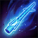

Habilidades
Llámame Rey del Copo de Nieve
Pasiva
Nunu & Willump ganan velocidad de movimiento y pueden crear bolas de nieve gigantes que crecen en tamaño y velocidad.
Nunu & Willump ganan velocidad de movimiento y pueden crear bolas de nieve gigantes que crecen en tamaño y velocidad.

Willump muerde a un enemigo, infligiendo daño y curándose. El daño es mayor contra monstruos y súbditos.

Crean y hacen rodar una bola de nieve que aumenta de tamaño y velocidad. Al chocar, causa daño y derribe a los enemigos.

Lanzan bolas de nieve que ralentizan a los enemigos. Si golpean a un enemigo varias veces, lo enraízan.

Crean un área helada que ralentiza a los enemigos y explota después de un tiempo, causando gran daño.